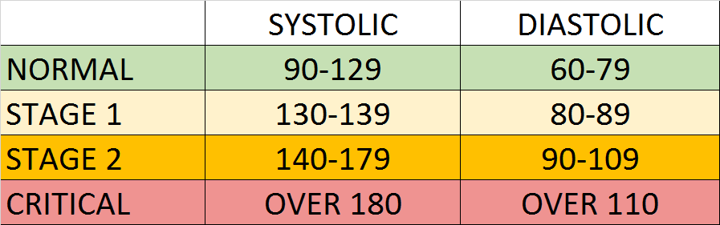

Symptoms
Urine darker in color
Dark urine usually means that there is protein and or blood leaking into the urine. If urine looks bloody and or is a dark amber yellow to dark Coca-Cola brown, this is a good indicator that the kidneys are not filtering correctly. Other signs to look out for are foamy or cloudy-looking urine.
Less frequent urinations with less urine
This could be a sign of more advanced kidney disease.
Fatigue
If the kidneys aren't getting rid of the waste in the blood, this waste can travel to the rest of the body impairing other organ's functions.
Swelling or puffiness in the face, hands, feet
When the kidneys aren't working properly, the body retains water. This water retention can be seen in two ways. The first is the visible puffiness and swelling in the face and extremities. When waking up in the morning, the face and especially around the eyes may be unusually puffy and it may take several hours for that to recede via gravity. Throughout the day, this water can travel into the hands, ankles, and feet. Walking can be comfortable as there is a lot of pressure in the feet.
Some things that can help the swelling are sleeping propped up with pillows and propping your feet on a chair or ottoman when sitting.
High blood pressure
The water retention caused by decreasing kidney function can cause high blood pressure, aka hypertension. One does not have to go to the doctor to check their blood pressure. You can find an afforable blood pressure machine at your local pharmacy (ex. CVS, Walgreens, etc) or even on Amazon. See the following chart for adult blood pressure ranges:

See the following link to check a child's blood pressure: https://www.bcm.edu/bodycomplab/BPappZjs/BPvAgeAPPz.html